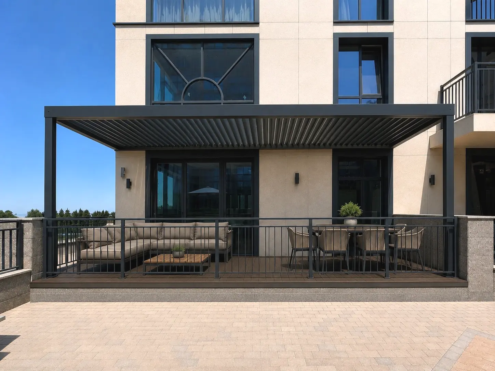
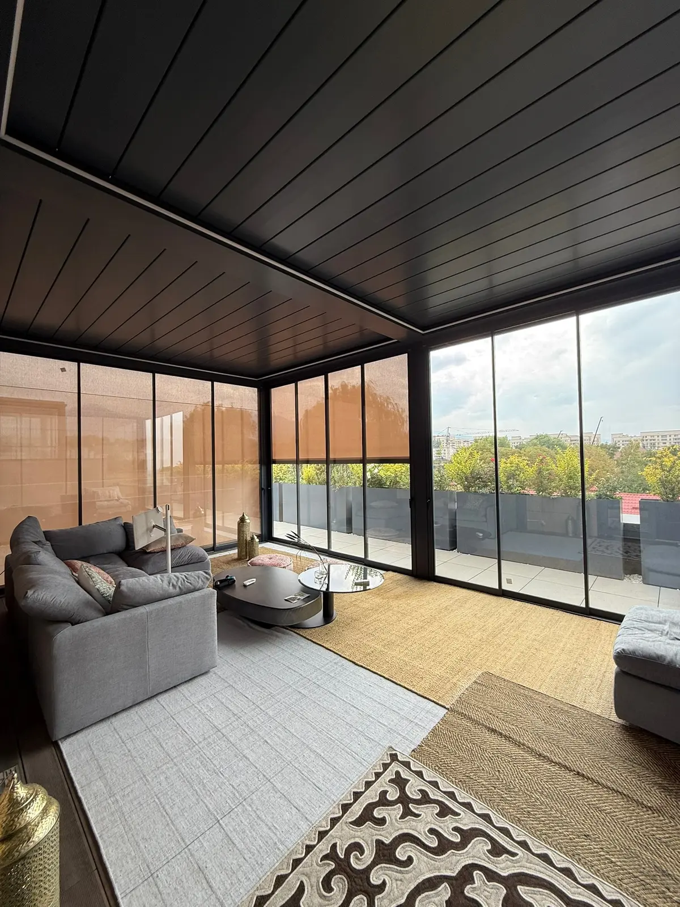
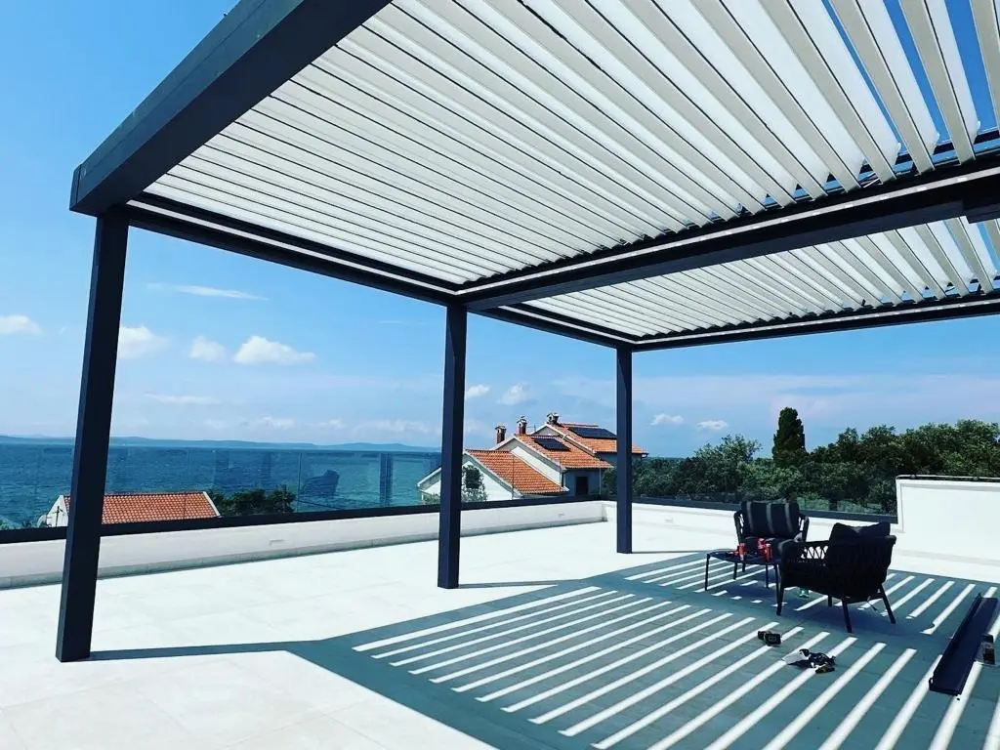
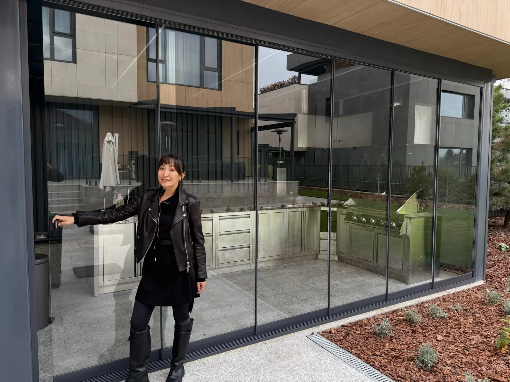
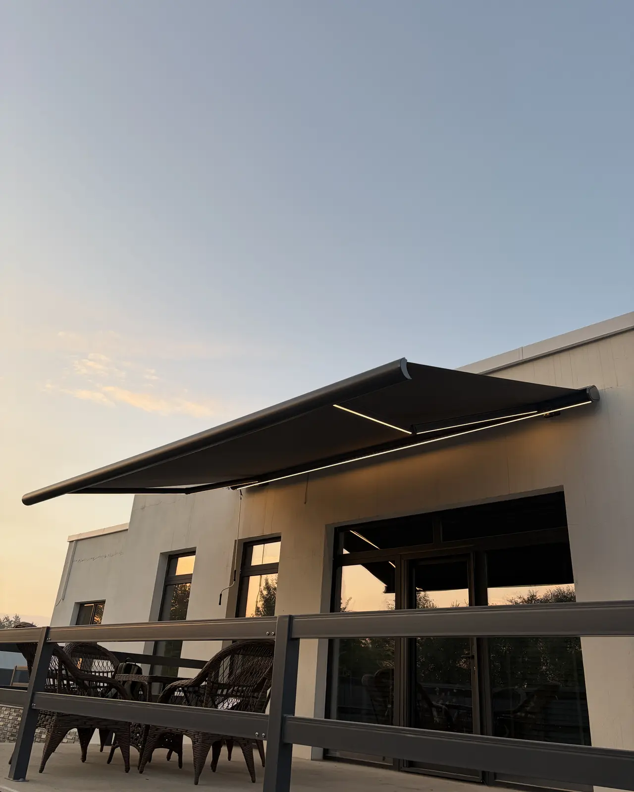
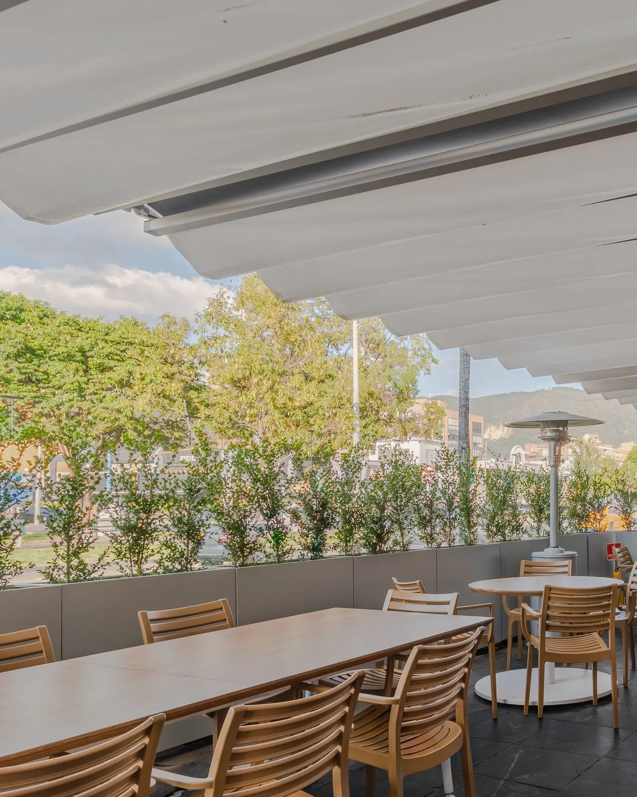
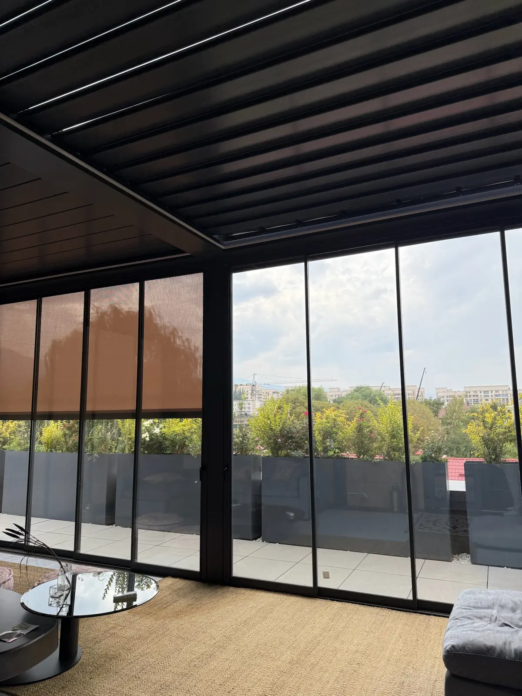

01Пергола для дома
Пергола для дома в Алматы: что учесть перед заказом
Как определить назначение террасы, подготовить размеры, фото и видео для консультации и замера.
Читать статью →ПОЛЕЗНОЕ · IGS OUTDOOR
Разбираем конструкции, сценарии использования и этапы работы на примерах из практики IGS Outdoor.

01Как определить назначение террасы, подготовить размеры, фото и видео для консультации и замера.
Читать статью →
02Почему у перголы нет одной цены за квадратный метр и какие данные нужны для точного предложения.
Читать статью →
03Сравниваем крышу, механику, снеговую нагрузку, стиль и сезонность использования.
Читать статью →
04Когда достаточно экрана, когда полезнее стекло и почему эти решения часто объединяют.
Читать статью →
05Назначение, размещение и дизайн маркизы для дома, кафе или ресторана.
Читать статью →
06Что дают пергола, ZIP-экраны и остекление заведению в переменчивую погоду.
Читать статью →
07Как проходят консультация, замер, визуализация, производство и монтаж конструкции.
Читать статью →ЭКСПЕРТНЫЙ ПОДХОД
Каждая терраса отличается размерами, расположением и сценарием использования. Поэтому статьи помогают понять варианты, а окончательную комплектацию мы подбираем после разговора и замера.